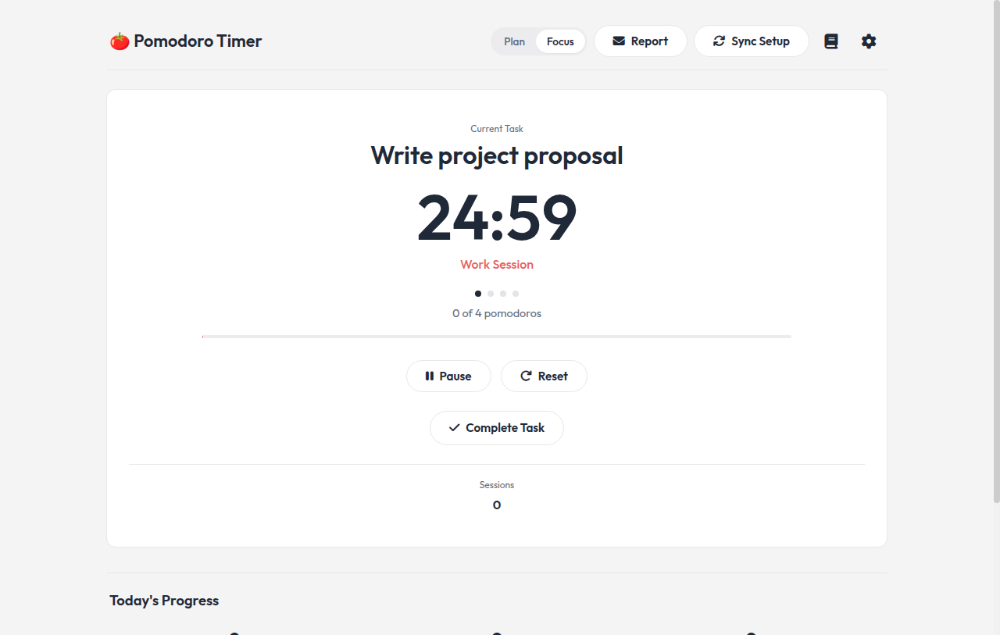
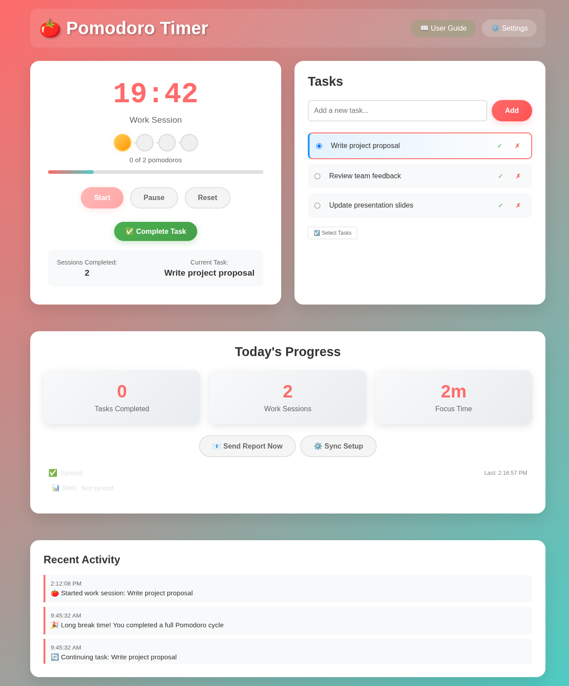

📱 Install as Web App
Turn the Pomodoro Timer into a native-like app on your device for quick access and better focus!
📱 Mobile Installation (iOS/Android)
- Open the timer in your mobile browser (Safari/Chrome)
- Tap the share button (iOS) or menu (Android)
- Select "Add to Home Screen"
- Choose a name and tap "Add"
- The app icon will appear on your home screen
💻 Desktop Installation (Chrome/Edge)
- Open the timer in Chrome or Edge browser
- Look for the install icon in the address bar
- Click "Install Pomodoro Timer"
- The app will open in its own window
- Pin to taskbar for quick access

Example: Timer running with 24:37 remaining on "Write project proposal" task
📊 Google Sheets Integration Setup
Automatically sync your productivity data to Google Sheets for backup, analysis, and cross-device access.
Why Use Google Sheets Integration?
- Automatic backup of all your tasks and work sessions
- Access your data from any device
- Create custom charts and productivity reports
- Share progress with team members or accountability partners
- Historical data analysis and trend tracking
Complete Setup Guide
-
Create or Open Your Google Sheet
Open Google Sheets and create a new spreadsheet where you want to track your Pomodoro data. Name it something like "Pomodoro Tracker".
-
Access Google Apps Script
In your Google Sheet, go to Extensions → Apps Script. This will open the Google Apps Script editor.
-
Copy the Script Code
Go back to the Pomodoro Timer, open Settings (⚙️), and click "📋 Setup Instructions". Click the "Copy Apps Script Code" button to copy the integration code.
-
Paste and Save the Code
Delete any existing code in the Apps Script editor, paste the copied code, and save the project. Name it "Pomodoro Sync".
-
Deploy as Web App
Click Deploy → New Deployment. Choose:
- Type: Web app
- Execute as: Me
- Who has access: Anyone
Click Deploy and authorize the app when prompted.
-
Copy the Webhook URL
Copy the web app URL provided after deployment. It should look like:
https://script.google.com/macros/s/your-script-id/exec -
Configure the Pomodoro Timer
Return to the Pomodoro Timer settings, paste the webhook URL in the "Google Apps Script Webhook URL" field, and save settings.
What Gets Synced?
Your Google Sheet will automatically receive:
- Activity Log: All completed tasks and work sessions with timestamps
- Task Sync: Real-time synchronization of your task list across devices
- Settings Backup: Your timer preferences and configurations

Complete step-by-step instructions for Google Sheets integration
💡 Pro Tips & Best Practices
🎯 Task Sizing
Break large tasks into smaller chunks that can be completed in 1-4 Pomodoros. This makes progress more visible and manageable.
🚫 Distraction Management
Keep a "distraction list" nearby. When something pops into your mind during a Pomodoro, write it down to address later rather than breaking focus.
📊 Track Interruptions
If you get interrupted during a Pomodoro, restart it. This teaches you to protect your focus time and reveals interruption patterns.
🔄 Batch Similar Tasks
Group similar tasks (emails, calls, research) into dedicated Pomodoros for better mental context switching.
⚡ Energy Management
Schedule your most important tasks during your peak energy hours, typically in the morning for most people.
📈 Weekly Reviews
Review your daily reports weekly to identify productivity patterns and optimize your schedule.
🔊 Sound Strategy
Use calming sounds for breaks (to encourage rest) and energizing sounds for work start (to boost motivation). Different sounds help your brain recognize different states.
⏰ Long Break Activities
Use long breaks (15-30 min) for substantial recovery: take a walk, eat a snack, meditate, or completely disconnect from work. This deep rest sustains productivity for hours.
❓ Frequently Asked Questions
Yes! The single timer button becomes "Pause" while running, and "Continue working on this task" when paused. However, traditional Pomodoro technique discourages pausing - it's better to restart if you get interrupted.
That's Focus mode: while a work session runs, the list hides and the timer takes the full width so you see one task only. Pause the timer (or finish/skip the session) and the list comes back. During breaks it stays visible so you can line up the next task.
Plan is for organizing: only the task list, no timer. Focus is for working: only your current task and the timer. Switch with the Plan/Focus toggle at the top — or press ▶ on a task in Plan and you'll jump straight into Focus with the timer running.
Double-click its name in the list and edit it inline. Enter or clicking away saves; Esc cancels. Empty names aren't allowed.
Yes. The countdown is based on an absolute end time, not on counting ticks, so it stays correct while you're elsewhere and corrects itself the moment you return. If the page gets closed or reloaded mid-session, the timer restores with the right time left — and if the session ended while you were away, it completes as soon as you come back.
Great! Click "✅ Complete Task" to mark it done, or use the remaining time to review your work, plan the next task, or take an early break.
Absolutely! Click the settings button (⚙️) to customize work sessions (1-60 minutes), short breaks (1-30 minutes), and long breaks (1-60 minutes) to suit your needs.
Long breaks are extended rest periods that occur after completing multiple work sessions (default: every 4 pomodoros). They help prevent burnout and maintain productivity throughout the day. The progress indicator shows "X of Y pomodoros" to track when your next long break will occur.
Yes! Go to Settings → Alert Sounds section. You can upload custom audio files (MP3, WAV, OGG) for 5 different alert types: short breaks, long breaks, work start, task completion, and daily reset. Each sound has independent volume and duration controls.
Yes! Once loaded, the timer works completely offline. Your data is saved locally in your browser. Only Google Sheets sync requires internet connection.
Make sure you've allowed notification permissions when prompted. You can also check your browser's notification settings and enable them for this site.
Yes! Set up Google Sheets integration to sync your tasks and data across all your devices automatically.
Absolutely! All data is stored locally in your browser by default. Google Sheets integration is optional and only sends data to your own Google Sheet.
Take a real break! Step away from your screen, stretch, hydrate, or take a short walk. Avoid work-related activities to let your mind recharge.
🔒 Privacy & Data Storage
Your privacy matters. The Pomodoro Timer is built with a privacy-first, local-first approach that puts you in complete control of your data.
How Your Data is Stored
All your productivity data is stored locally in your browser using modern web storage technologies:
- localStorage: Stores your tasks, settings, daily statistics, and activity logs
- IndexedDB: Stores custom alert sound files (audio data)
- No External Servers: By default, nothing is sent to any server or third party
Privacy Benefits of Browser Storage
- Complete Data Ownership: You own 100% of your data - it stays on your device
- No Tracking or Analytics: We don't collect, track, or analyze your usage patterns
- Works Offline: Your timer functions completely offline after initial load
- No Account Required: Start using immediately without creating accounts or providing personal information
- GDPR & Privacy Law Compliant: No data collection means no privacy concerns
- Zero Server Dependency: Your productivity workflow isn't affected by server outages or internet connectivity
- Browser Sandboxing: Data is isolated per browser and protected by browser security
What Data is Stored Locally?
- Your task list and task completion status
- Timer settings (work duration, break duration, long break interval)
- Daily statistics (sessions completed, focus time, tasks completed)
- Activity log (session start times, completions, breaks)
- Custom alert sound files you upload
- Sound preferences (volume, duration for each alert type)
- Google Sheets webhook URL (if you choose to enable sync)
Optional Cloud Sync: Your Choice
Google Sheets integration is completely optional. It's designed for users who want:
- Backup of their productivity data
- Access from multiple devices
- Advanced analysis and custom reports
Important: Even with Google Sheets sync enabled, data only goes to your own Google Sheet that you control. No third-party servers are involved.
Data Control & Management
- Clear Data Anytime: Use your browser's settings to clear all stored data instantly
- Export Capability: Sync to Google Sheets acts as a data export mechanism
- No Vendor Lock-in: Your data is in standard formats you can access directly
- Transparent Storage: Use browser DevTools to inspect exactly what's stored
🎉 Ready to Boost Your Productivity?
You now have everything you need to master the Pomodoro Technique! Remember, consistency is key - start with just a few Pomodoros per day and gradually build the habit.